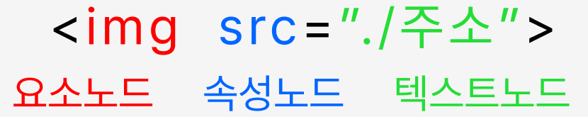

자바스크립트기초_내장객체_문서객체(document)
DOM(Document Object Model) : 넓은 의미로는 웹브라우저가 html을 인식하는 방법 / 좁은 의미로는 웹문서 안에 있는 요소(객체)들의 집합이다.
웹브라우저(크롬, 사파리, 파이어폭스, 오페라, 익스플로러, edge, 모바일 브라우저)마다 DOM구현이 호환되지 않아서 W3C에서 DOM에 대한 표준규칙을 작성하였다.
1. DOM tree구조의 이해
DOM은 노드 (node)들의 집합이라고 할 수 있으며, DOM의 노드에는 요소노드, 속성노드, 텍스트노드로 구성되어있다. 노드는 DOM의 구조를 이루는 최소단위이며, 이 노드들의 집합체가 DOM이라고 할 수 있다.

2. DOM을 구성하는 기본원칙
- 모든 html 태그 = 요소(element)노드
- html태그에서 사용하는 텍스트 내용 = 자식노드인 텍스트(text)노드
- html태그에 있는 속성 = 자식노드인 속성노드
- 주석 = 주석노드
3. document 객체의 메소드
- open() - 데이터를 보낼 준비
- close() - 문서에 데이터 출력을 마무리함
- clear() - 브라우저에서 문서를 지움
- write() - 문서에 데이터를 출력함
- writeln() - 문서에 줄(line)바꾸기를 포함하여 데이터를 출력함.
4. document객체의 속성들
- domain - 현재 문서가 있는 서버의 도메인 이름
- title - 현재 문서의 제목
- bgColor - 문서의 배경색
- fgColor - 문서의 글자색
- linkColor - 문서의 링크 글자색
- alinkColor - 링크를 클릭하였을 때 글자색
- vlinkColor - 방문했던 링크의 글자색
- anchors - 문서의 anchor들의 배열
- cookie - 쿠키에 대한 정보
- url - 문서의 url주소
실습1. 현재 작성중인 문서의 정보 알아보기
문서의 title정보와 url정보 출력하기
실습2. 버튼 클릭 시 문서 안의 글자색, 배경색 변경하기 (토글버튼 0, 1) > 다크모드 버튼
실습3. 버튼 클릭 시 h3태그만 선택하여 글자색 '빨강'으로 변경하기
실습4. 버튼 클릭 시 li태그만 선택하여 글자색 '파랑'으로 변경하기